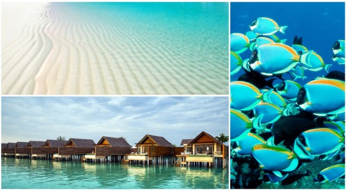

Вариант недорогих авиабилетов на Мальдивы или на Кубу с вылетом прямо из Минска. Много дат! Недорогие билеты от KLM/Air France в связке с Белавиа и Etihad на Мальдивы или Кубу с вылетом из Минска. Стоимость билетов на Кубу — 436 евро туда-обратно, на Мальдивы — 479 евро туда-обратно. Перелеты могут быть со стыковками в Абу-Даби, Париже, Амстердаме (в зависимости от выбранных рейсов). В стоимость билетов входит провоз ручной клади и питание на борту, багаж не включен.
если не выходить из аэропортов на пересадках, то дополнительная виза не нужна, если выходить в Париже или Амстердаме, то нужен шенген. Даты: с конца октября по март. Проверить даты или перейти к покупке можно через aviasales.ru
Наверх